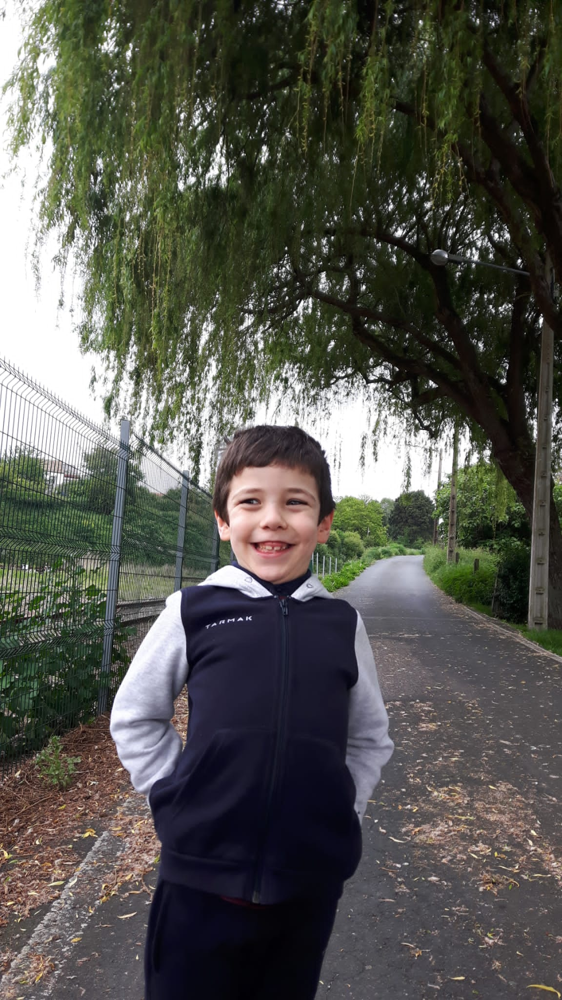

Hostal de los Reyes Católicos
Los Reyes Católicos lo mandaron construir para atender a los peregrinos que venian de muy lejos. El lugar perfecto para descansar después del peregrinaje y visitar los grandiosos monumentos de Santiago
¡Hasta la próxima!
